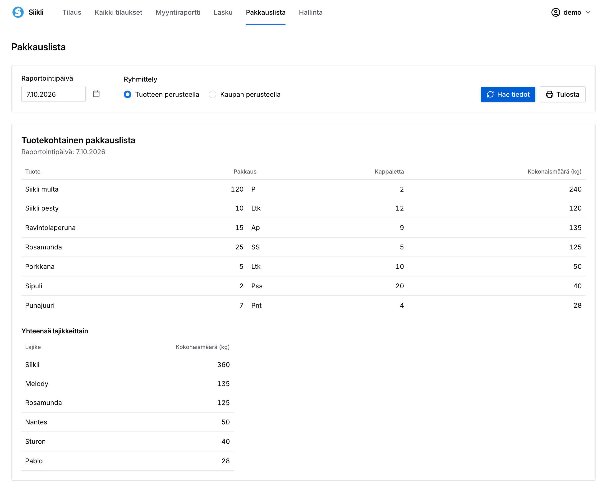

Jäljitettävyys
Kirjaa lohkot ja erät, niin jokaisen toimitetun tuotteen erä ja lohko tulostuvat kuormakirjaan. Siikli ehdottaa tilausriville erää valmiiksi, ja erästä näkee, kenelle se on toimitettu.
Tehty maalaisjärjellä
Yksinkertainen tilaus-, pakkauslista- ja laskutusjärjestelmä elintarvikkeiden tukkumyyntiin. Kirjaa tilaukset toimituspäiville, tulosta pakkaamolle selkeät listat ja laskuta asiakkaan toimitukset yhdellä laskulla. Siikli on ollut Aromäen tilan päivittäisessä käytössä yhdeksän vuotta, ja sillä on laskutettu 17 miljoonaa euroa.
Kokeile 3 kk maksutta Katso ominaisuudet
Aloita heti Google-tilillä tai sähköpostilla.

Siikli on tarkoituksella yksinkertainen. Sillä hoidetaan tilaukset, pakkauslistat, laskut ja myyntiraportit, eikä juuri muuta.
”Siikli on huomattavasti parempi meillä tuolla pakkaamolla kun saa yksinkertaiset listat/raportit.”

Yksi tilaus asiakasta ja toimituspäivää kohden. Hinnat tulevat tuotelistasta, ja niitä voi muuttaa tilauskohtaisesti. Siikli laskee pakkausten lukumäärän tilatuista määristä.

Pakkaamo näkee päivän pakattavat tuotteittain tai asiakkaittain, valmiina tulostettavaksi. Jokaisen toimituksen mukana lähtee kuormakirja.

Asiakkaan toimitukset miltä tahansa ajanjaksolta yhdelle laskulle. Laskulla näkyvät arvonlisävero ja asiakaskohtaiset hyvitykset, ja liitteessä on jokainen toimitus eriteltynä. Laskut saa PDF-tiedostoina, tai Fivaldi-lisäosalla suoraan Fivaldiin, josta ne voi lähettää verkkolaskuina.

Hinnat verollisina ja verottomina, pakkauskoot ja -tyypit sekä asiakasryhmät omine tuotteineen. Myös järjestyksen listoilla voi määrätä itse.
Kirjaa lohkot ja erät, niin jokaisen toimitetun tuotteen erä ja lohko tulostuvat kuormakirjaan. Siikli ehdottaa tilausriville erää valmiiksi, ja erästä näkee, kenelle se on toimitettu.
Ajanjakson kaikki myynnit rivi riviltä Excel-tiedostona.
Toimisto näkee kaiken, varasto vain pakkauslistat ilman hintoja.
Tiedot varmuuskopioidaan salattuina tunnin välein, eikä varmuuskopioita voi poistaa ennen aikojaan, en edes minä. Siikli tarkistetaan tietoturva-aukkojen varalta joka päivä, ja korjaan löydökset yleensä samana päivänä.
Olen tehnyt Siiklin ja ylläpitänyt sitä vuodesta 2017. Kysymyksiin vastaa sama ihminen, joka on sen rakentanut.
Kolme ensimmäistä kuukautta maksutta
149 € / kk + alv
Hintaan sisältyvät palvelin, varmuuskopiot, päivitykset ja tuki. Käyttäjiä voi olla niin monta kuin tarvitsette.
Ei määräaikaista sopimusta, irtisanominen kuukauden varoitusajalla. Saatte kaikki tietonne Excel-tiedostoina.
Fivaldi-lisäosa 20 € / kk + alvLaskut siirtyvät suoraan Fivaldiin, ja verottomat ja verolliset summat täsmäävät Fivaldin laskentaan sentilleen. Vaatii oman Fivaldi-tilauksen (10 € / kk sekä Fivaldin omat lisämaksut).
Haluatko ensin jutella? Kerro lyhyesti, mitä myytte, kenelle ja miten tilaukset nyt hoidetaan. Katsotaan yhdessä, sopiiko Siikli teille.

Juha WilppuSiiklin tekijä ja ylläpitäjä
Tavoitat minut parhaiten tekstiviestillä, ja soitan takaisin sopivana aikana.
050 329 2935juha.wilppu@gmail.com